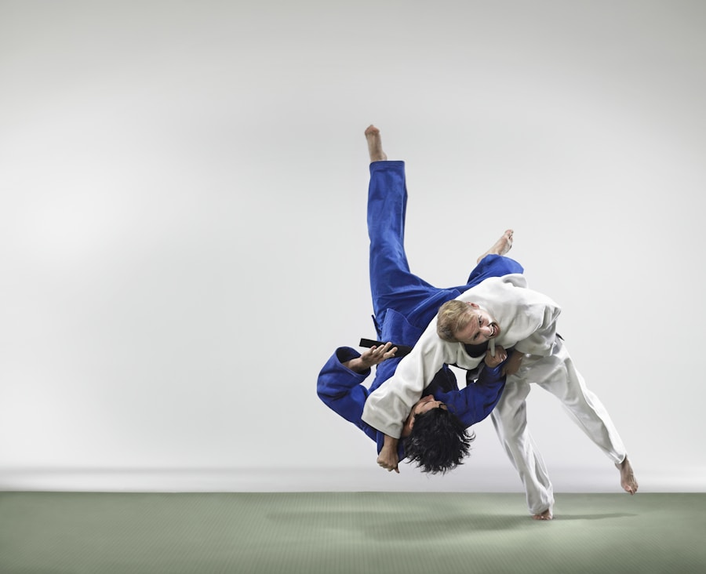

Sportarten
Was wir trainieren
Zwei klassische Kampfsportarten mit jahrhundertealter Tradition – bei uns modern und altersgerecht vermittelt.

↗Der sanfte Weg
JUDO
„Der sanfte Weg" – Judo ist eine der meistverbreiteten Kampfsportarten der Welt und olympische Disziplin. Im Fokus stehen Wurftechniken, Bodenkampf und mentale Stärke.
Trainingszeiten & Details
Die sanfte Kunst
JIU-JITSU
Die „sanfte Kunst" – Jiu-Jitsu kombiniert Hebel, Würge- und Wurftechniken zur effektiven Selbstverteidigung. Ideal für Einsteiger und erfahrene Kämpfer.
Trainingszeiten & Details